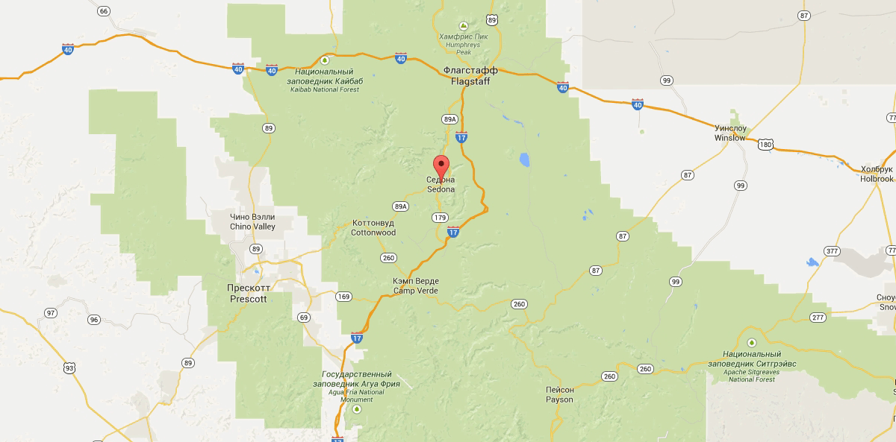

Седона - город в штате Аризона

Седона — небольшой городок в Аризоне, заслуживающий большего!
Рассмотрим 5 причин, по которым Седона круче, чем Гранд Каньон!
Подбор места для проживания
Заинтересовались? Укажите предполагаемые даты поездки, и мы покажем вам лучшие предложения гостиниц в седоне
